Materials
Materials
This article is a clone from the original GoodEarth Connect catalog. View the original post at:
Architectural tapestry rooted in tradition & modernity ↗
Terracotta jalis
“In the architecture of India, terracotta jalis have whispered secrets of the past through their intricate patterns.” – John Smith, Architectural Historian
Terracotta jalis, with their rich reddish-brown hues and intricate patterns, stand as enduring symbols of India’s deep-rooted architectural heritage. These clay-based lattices bridge the rustic charm of earth with the finesse of master craftsmanship. Tracing their origins to the Vedic periods and finding prominence during the Mughal dynasty, these structures tell tales of a bygone era.
In a time before the luxury of air conditioning, terracotta jalis served a multifaceted purpose. By allowing air to pass while shielding people from the sun’s harsh glare, it allowed natural cooling. Furthermore, these finely-crafted lattices offered privacy in communal living spaces, striking a delicate balance between openness and seclusion. Such was their versatility and importance that they found their way into diverse structures, from palaces and temples to mosques, not just in India but also in neighbouring regions like Pakistan and Bangladesh.
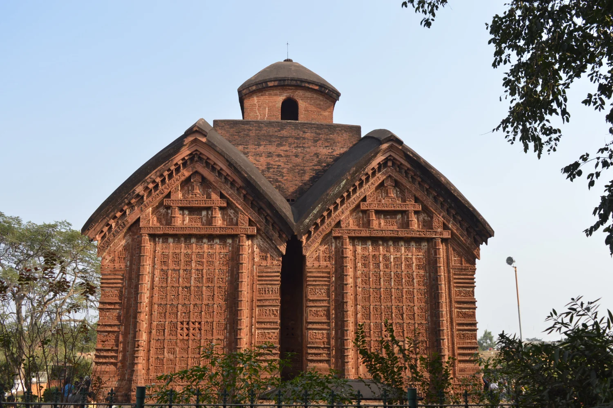
Jorebangla Temple, Bishnupur, West Bengal built in 1655. Image Source: https://zurl.co/HGyY
In modern architecture
Despite the rapid evolution of architectural materials and methods, terracotta jalis remain a timeless choice. In an age where the emphasis is on sustainable and eco-friendly living, terracotta jalis offer an elegant solution. Contemporary architects and designers are reinterpreting this versatile material, using it not only for artistic exterior façades that promote natural light and ventilation but also as stylish interior partitions that double as art pieces.
Within this contemporary milieu, GoodEarth’s innovative approach to the age-old medium of terracotta comes into vivid focus. At the heart of GoodEarth’s architectural philosophy lies a deep reverence for natural materials. These materials, with their organic origins, harmonise effortlessly with their surroundings, producing a distinct aesthetic that resonates deeply with both tradition and modernity. Beyond mere aesthetics, the adoption of such materials reaffirms GoodEarth’s unwavering commitment to sustainability, highlighting a conscious move towards eco-friendly architecture and design.
The terracotta jalis, reminiscent of age-old traditions, are presented in refreshing, modern contexts. The rhythmic patterns of these jalis, with their earthy tones, intermittently draw the eye, establishing a serene visual rhythm evoking a sense of beauty and purpose.
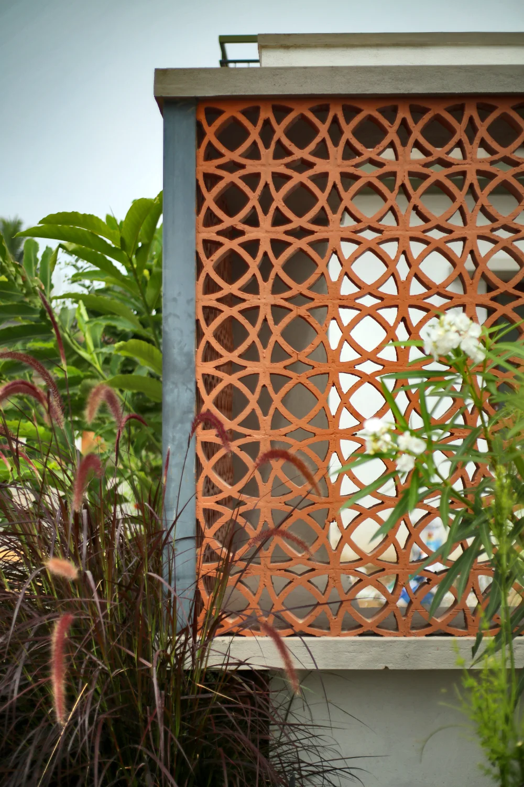
Gallery Image
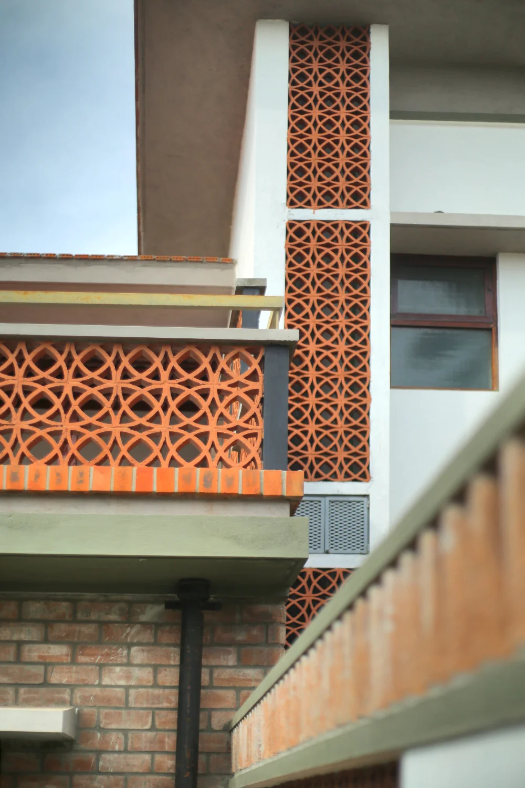
Gallery Image
Window screens
With their breathable openings, they offer natural ventilation and let in ample natural light. By diffusing sunlight, the result is a mesmerising play of light and shadow within homes while also helping in regulating the temperature. They also provide a graceful buffer against the solidity of compound walls.
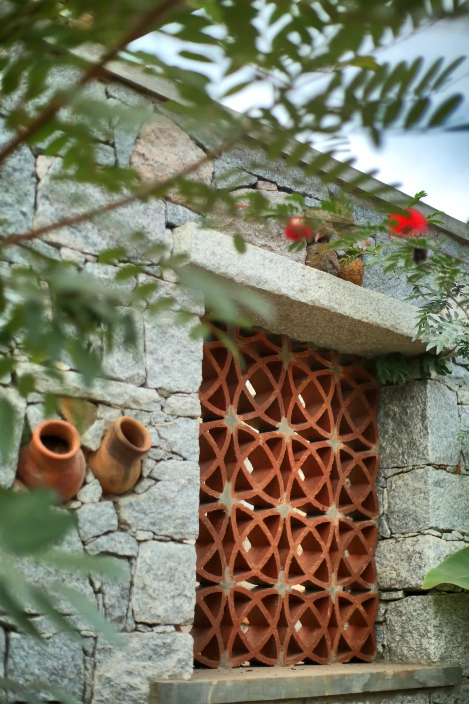
Gallery Image
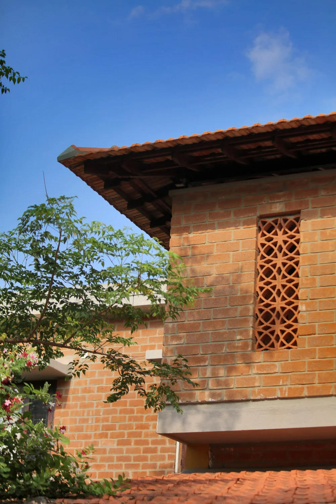
Gallery Image
Compound walls
More than just boundaries, these walls, when adorned with terracotta jalis, hint at the design treasures within. As nature intertwines with design, plants weaving through the lattice holes present a dynamic spectacle, contrasting with the permanence of other construction materials.
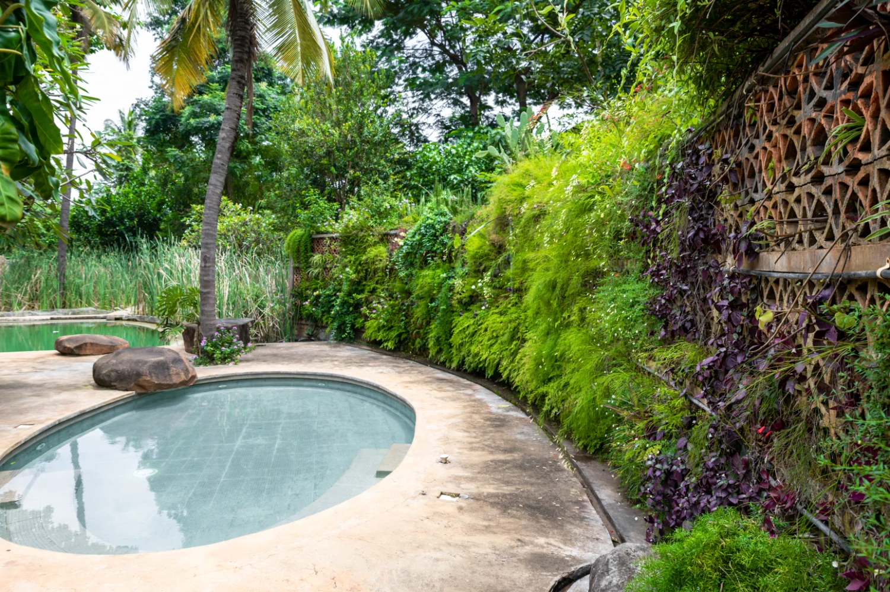
Gallery Image
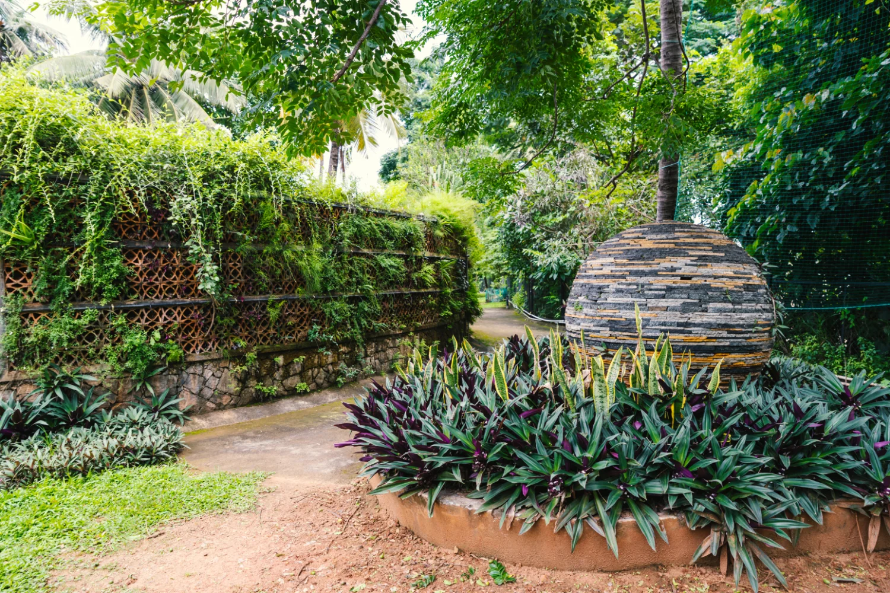
Gallery Image
Duct covers
External pipes and ducts often mar architectural beauty, but when concealed with terracotta jalis, they blend seamlessly, transforming potential eyesores into design elements.
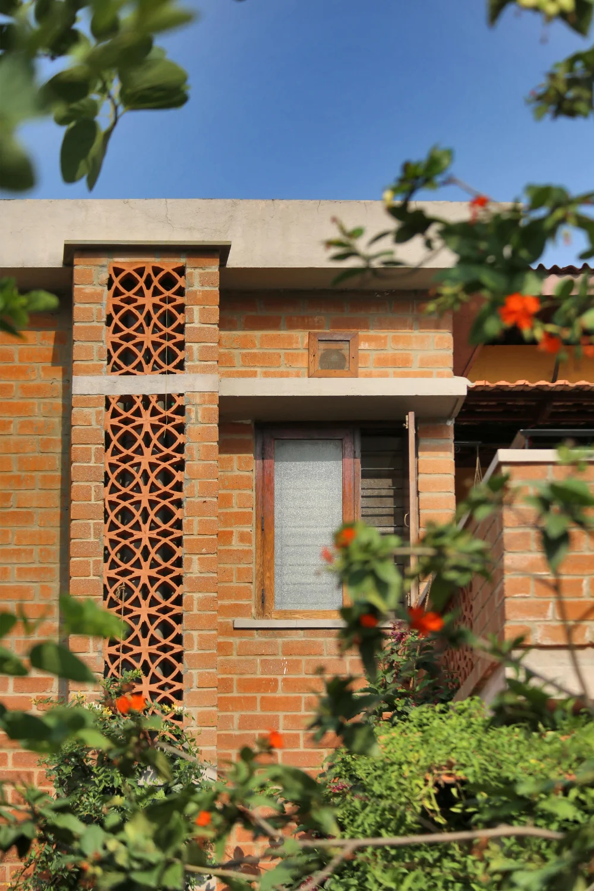
Gallery Image
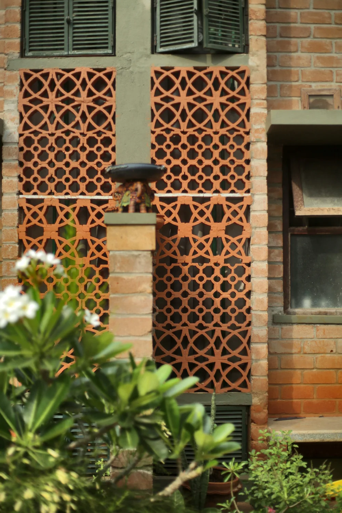
Gallery Image
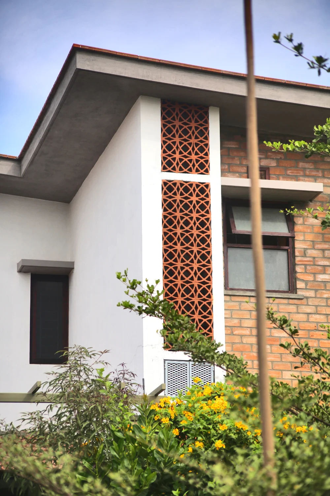
Gallery Image
Parapets
A terrace represents openness and freedom. Introducing terracotta blocks as parapet walls breaks the monotony and accentuates this sense of space. The intricate designs of the jalis not only enhance openness but also add an ornate touch to the overall façade.
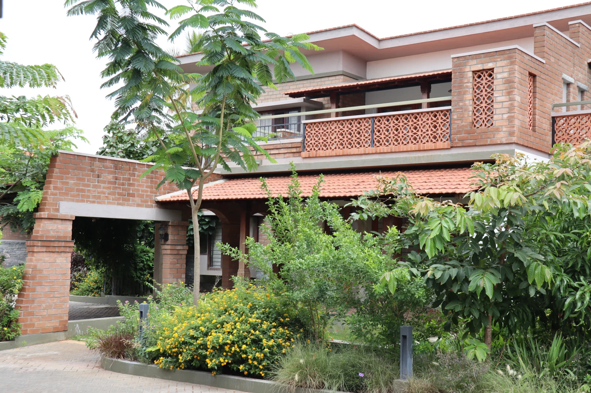
Gallery Image

Gallery Image
In an era when energy conservation is paramount, terracotta jalis excel not only in providing natural cooling and sustainability but also in enriching spaces with their aesthetic value. They play a pivotal role in striking a balance between privacy and openness. And their contribution to energy efficiency shows their significance in contemporary design. Modern architecture continues to discover myriad ways to incorporate and innovate with terracotta jalis, reflecting their enduring appeal.
As we trace the lineage of architectural evolution, the whispered secrets of terracotta jalis from the past continue to resonate in the present, guiding us towards a more sustainable and culturally-rich architectural future.